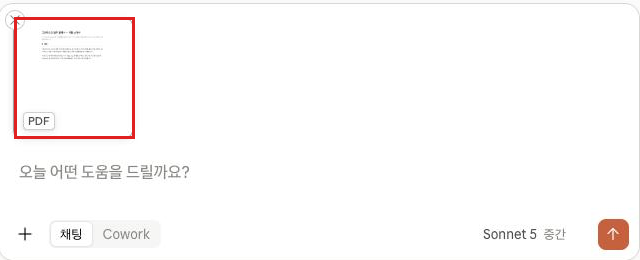
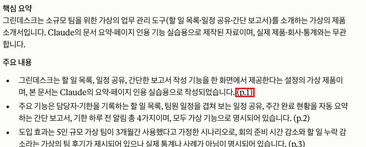

Claude · 초급 · 모듈 03
PDF를 올려 문서 내용에 근거한 답을 받고, 어떤 형식과 크기까지 올릴 수 있는지, PDF 쪽수에 따라 처리 방식이 어떻게 달라지는지 확인합니다.
이 모듈을 마치면 다음을 할 수 있습니다.
| 항목 | 내용 |
|---|---|
| 필요 플랜 | 없음. Free 계정으로 충분합니다. |
| 설치 | 불필요. 웹 브라우저만 있으면 됩니다. |
| 실습용 파일 | 100쪽 이하의 PDF 1개를 미리 준비하세요. 사내 기밀이 아닌 자료여야 합니다(3-3 참조). 마땅한 파일이 없으면 공개된 기관 보고서나 제품 매뉴얼을 내려받아 쓰면 됩니다. |
| 사전 지식 | 모듈 02 수료 — 새 대화 시작과 대화 관리가 가능해야 합니다. |
| 예상 사용량 | 프롬프트 3회 + PDF 1개. 문서가 길수록 사용량을 많이 소모합니다. |
이 문서는 화면 속 위치를 기준으로 설명합니다. 한국어 표기가 공식 문서로 확인된 경우에만 따옴표로 인용했고, 확인되지 않은 것은 공식 자료 미확인으로 남겨 두었습니다.
| 이 문서에서 부르는 이름 | 확인 상태 |
|---|---|
| "+" 버튼 (채팅 상자 왼쪽 아래) | 확인됨 (출처: support.claude.com/ko/articles/8241126, 2026-08-20 확인) |
| "파일 또는 사진 추가" (메뉴 항목) | 확인됨 (출처: support.claude.com/ko/articles/8241126, 2026-08-20 확인) |
| "열기" (파일 선택 창 버튼) | 확인됨 (출처: support.claude.com/ko/articles/8241126, 2026-08-20 확인) |
| "제출" 버튼 | 확인됨 (출처: support.claude.com/ko/articles/8114491, 2026-08-19 확인) |
이 문서의 설명은 위치를 기준으로 하므로 화면 언어와 무관하게 따라갈 수 있습니다. 표시 언어를 바꾸는 방법은 계정 설정 변경이라 중급 모듈에서 다룹니다.
업로드한 파일은 대화 기록에 남습니다. 고객 개인정보, 계약서, 내부 대외비 문서는 이 실습에 쓰지 마세요. 사내에 AI 도구 사용 지침이 있다면 그 지침을 먼저 확인하고, 허용 범위 안의 자료로 실습하세요. 어떤 자료를 올려도 되는지 판단이 서지 않으면 공개 자료로 대체하는 편이 안전합니다.
파일을 올리면 Claude가 그 내용을 읽고 답합니다. 다만 형식·크기·쪽수에 한도가 있고, PDF는 100쪽을 넘는 순간 처리 방식이 달라집니다. 이 세 가지만 알면 "왜 답이 이상하지?" 하는 상황 대부분을 미리 피할 수 있습니다.
| 구분 | 지원 형식 |
|---|---|
| 문서 | PDF, DOCX, CSV, TXT, HTML, ODT, RTF, EPUB, JSON, XLSX |
| 이미지 | JPEG, PNG, GIF, WebP |
XLSX는 계정에서 "코드 실행 및 파일 생성"을 켜야 업로드됩니다. 이 설정은 모듈 05에서 다루므로, 이 모듈에서는 XLSX를 쓰지 않습니다. (출처: support.claude.com/ko/articles/8241126, 2026-08-20 확인)
| 항목 | 한도 |
|---|---|
| 파일 크기 | 파일당 500MB |
| 파일 수 | 채팅당 최대 20개 |
| 이미지 크기 | 최대 8000×8000 픽셀 |
| PDF 쪽수 | 1000쪽 |
위 수치는 개별 채팅에 올릴 때의 한도입니다. 프로젝트에 올리는 파일은 파일당 30MB로 한도가 다르며, 프로젝트는 중급 트랙에서 다룹니다. (출처: support.claude.com/ko/articles/8241126, 2026-08-20 확인)
500MB는 파일 크기 한도이고, 모듈 01에서 배운 20만 토큰은 대화가 담을 수 있는 정보량입니다. 크기 한도를 넘지 않아도 문서가 너무 길면 길이 한도에 걸릴 수 있습니다. 이때는 문서를 나눠 올립니다.
| 쪽수 | Claude가 읽는 것 | 실무상 의미 |
|---|---|---|
| 100쪽 이하 | 텍스트 + 시각 요소(이미지·차트·그래픽) | 표나 그래프에 대해 물어도 답할 수 있습니다. |
| 101~1000쪽 | 텍스트만 | 차트 내용을 물으면 제대로 답하지 못합니다. |
| 1000쪽 초과 | 업로드 불가 | "업로드된 파일이 너무 큽니다" 오류가 납니다. |
그래서 이 모듈의 실습은 100쪽 이하 PDF를 기준으로 합니다. (출처: support.claude.com/ko/articles/8241126, 2026-08-20 확인)
DOCX·HTML 같은 다른 형식은 안에 이미지가 들어 있어도 Claude가 그 이미지를 읽지 못합니다. 그림이 중요한 자료라면 PDF로 변환해 올리는 편이 낫습니다. (출처: support.claude.com/ko/articles/8241126, 2026-08-20 확인)
PDF의 특정 쪽을 가리킬 때는 문서에 인쇄된 쪽 번호가 아니라 PDF 뷰어에 표시되는 쪽 번호를 씁니다. 표지와 목차가 있는 보고서는 두 번호가 몇 쪽씩 어긋나는 경우가 많습니다. (출처: support.claude.com/ko/articles/8241126, 2026-08-20 확인)
만들 결과물: 업로드한 PDF에 대해 요약과 근거 쪽 번호가 함께 담긴 답변 1건.
준비한 PDF를 뷰어로 열어 전체 쪽수를 확인합니다. 100쪽을 넘으면 4-4에서 본 대로 시각 요소를 읽지 못하므로, 100쪽 이하 파일로 바꾸는 편이 좋습니다.
사이드바에서 새 대화를 시작합니다. 앞 모듈에서 쓰던 대화에 이어서 올리면 앞선 내용까지 함께 처리되어 사용량을 더 씁니다.
채팅 상자 왼쪽 아래의 "+" 버튼을 클릭하고 메뉴에서 "파일 또는 사진 추가"를 선택합니다. 기기에서 준비한 PDF를 고른 뒤 "열기"를 클릭합니다.
파일을 채팅 창으로 직접 드래그 앤 드롭해도 되고, 이미지는 복사해서 클립보드에서 붙여넣기도 됩니다. 셋 중 편한 방법을 쓰면 됩니다. (출처: support.claude.com/ko/articles/8241126, 2026-08-20 확인)
[C-01] 파일 첨부 메뉴 — "+" 버튼을 누르면 열리는 메뉴를 근사한 목업입니다. 실제 메뉴에는 "파일 또는 사진 추가" 외에 다른 항목이 더 있을 수 있습니다.
실제 화면과 다를 수 있는 근사 목업입니다. 이 메뉴는 실제로 열립니다 — 접근성 트리(accessibility tree)에서 "파일 또는 사진 추가" 메뉴 항목의 존재를 직접 확인했습니다. 다만 이 실습 환경의 화면 캡처 도구가 이 메뉴가 그려지는 레이어를 인식하지 못해, 메뉴가 열린 상태에서 찍은 스크린샷에 메뉴가 전혀 나타나지 않는 현상을 여러 차례 재현했습니다. 그래서 실촬영 대신 목업으로 대체했습니다. 학습자의 실제 브라우저에서는 "+" 버튼을 누르면 이 메뉴가 정상적으로 눈에 보입니다.
입력창 위(또는 옆)에 파일 미리보기 카드가 표시되면 첨부된 것입니다. PDF는 파일 이름 텍스트가 아니라 "PDF" 배지가 붙은 썸네일 카드로 나타납니다. 아직 "제출"을 누르지 않은 상태입니다.

파일이 첨부된 상태에서 아래 프롬프트를 입력창에 붙여 넣고 "제출" 버튼을 클릭합니다. 모듈 01에서 배운 3요소(과제·맥락·출력 형식)가 그대로 들어 있습니다.
첨부한 PDF를 읽고 아래 형식으로 정리해 주세요.
[과제]
이 문서를 처음 보는 사람이 5분 안에 파악할 수 있게 요약해 주세요.
[출력 형식]
- 맨 위에 3줄 이내 핵심 요약
- 그다음 "주요 내용" 항목 5개 이내
- 각 항목 끝에 근거가 있는 PDF 쪽 번호를 (p.12) 형태로 붙여 주세요
- 문서에 없는 내용은 지어내지 말고, 불확실하면 "문서에서 확인 불가"로 표시해 주세요
응답에 적힌 쪽 번호 중 하나를 골라, PDF 뷰어에서 그 쪽을 직접 열어 봅니다. 내용이 일치하는지 눈으로 확인하세요. 이 확인 습관이 이 모듈에서 가장 중요합니다. 4-5에서 본 것처럼 뷰어 쪽 번호와 인쇄된 쪽 번호가 다를 수 있으니, 어긋나면 어느 쪽 기준인지 함께 살펴보세요.
같은 대화에서 아래 프롬프트를 붙여 넣고 "제출" 버튼을 클릭합니다. 대괄호 안은 본인 문서에 맞게 바꾸세요.
이 문서에서 [찾고 싶은 주제]에 대해 뭐라고 하는지 알려 주세요.
해당 부분을 그대로 인용하지 말고 제 말로 풀어서 설명하되,
어느 쪽에 나오는지 쪽 번호를 함께 적어 주세요.
문서에 관련 내용이 없으면 "해당 내용 없음"이라고만 답해 주세요.같은 대화에서 아래 프롬프트를 보냅니다. 문서와 전혀 관계없는 것을 일부러 물어보는 단계입니다.
이 문서에 2027년 예산 배정액이 나와 있나요? 나와 있다면 금액을 알려 주세요.문서에 그런 내용이 없다면 "없다"는 취지의 답이 나와야 정상입니다. 이 확인을 해 두면, 앞으로 업무 문서를 다룰 때 답을 어디까지 믿어야 할지 감을 잡을 수 있습니다.
아래 "예상 출력"은 응답 예시입니다. 성공 여부는 문구가 아니라 결과물의 형태와 항목이 요청대로 나왔는지로 판단합니다.
사전 준비물: 로그인한 Claude 계정, 새 대화 1개, 100쪽 이하 PDF 1개가 첨부된 상태.
첨부한 PDF를 읽고 아래 형식으로 정리해 주세요.
[과제]
이 문서를 처음 보는 사람이 5분 안에 파악할 수 있게 요약해 주세요.
[출력 형식]
- 맨 위에 3줄 이내 핵심 요약
- 그다음 "주요 내용" 항목 5개 이내
- 각 항목 끝에 근거가 있는 PDF 쪽 번호를 (p.12) 형태로 붙여 주세요
- 문서에 없는 내용은 지어내지 말고, 불확실하면 "문서에서 확인 불가"로 표시해 주세요예상 출력(응답 예시): 짧은 핵심 요약 → "주요 내용" 목록 순서로 답이 나오고, 각 항목 끝에 (p.숫자) 형태의 쪽 번호가 붙습니다.
성공 확인 방법: 아래 3가지가 모두 보이면 성공입니다.
사전 준비물: 프롬프트 A를 보낸 같은 대화.
이 문서에서 [찾고 싶은 주제]에 대해 뭐라고 하는지 알려 주세요.
해당 부분을 그대로 인용하지 말고 제 말로 풀어서 설명하되,
어느 쪽에 나오는지 쪽 번호를 함께 적어 주세요.
문서에 관련 내용이 없으면 "해당 내용 없음"이라고만 답해 주세요.예상 출력(응답 예시): 해당 주제에 대한 설명과 쪽 번호가 나오거나, 관련 내용이 없으면 "해당 내용 없음"이 나옵니다.
성공 확인 방법: 답변에 쪽 번호가 붙어 있고, 그 쪽을 PDF에서 열었을 때 관련 내용이 실제로 있으면 성공입니다.
사전 준비물: 프롬프트 A·B를 보낸 같은 대화.
이 문서에 2027년 예산 배정액이 나와 있나요? 나와 있다면 금액을 알려 주세요.예상 출력(응답 예시): 문서에 해당 내용이 없다는 취지의 답이 나옵니다.
성공 확인 방법: 없는 정보를 지어내지 않았다면 성공입니다. 만약 문서에 없는 금액이 답으로 나왔다면, 그 답은 신뢰할 수 없습니다. 프롬프트 A처럼 "문서에 없는 내용은 지어내지 말라"는 문장을 넣는 습관이 필요한 이유입니다.
| 증상 | 원인 | 해결 |
|---|---|---|
| "업로드된 파일이 너무 큽니다" 오류가 난다 | PDF가 1000쪽을 초과함 | 문서를 여러 개로 나눠 각각 올립니다. 필요한 장(章)만 따로 추출해 올리는 편이 빠릅니다. |
| 차트·그래프 내용을 물었는데 엉뚱하게 답한다 | PDF가 101쪽 이상이라 텍스트만 처리됨 | 해당 부분만 100쪽 이하로 잘라 다시 올립니다. |
| DOCX 안의 이미지를 못 읽는다 | PDF가 아닌 문서는 텍스트만 추출됨 | PDF로 변환해 올리거나, 해당 이미지만 따로 캡처해 이미지 파일로 올립니다. |
| XLSX를 올리려는데 첨부가 안 된다 | 계정에서 "코드 실행 및 파일 생성"이 꺼져 있음 | 이 설정은 모듈 05에서 다룹니다. 지금은 CSV로 저장해 올리면 됩니다. |
| 응답의 쪽 번호가 실제 문서와 다르다 | 인쇄된 쪽 번호와 PDF 뷰어 쪽 번호가 어긋남 | 프롬프트에 "PDF 뷰어 기준 쪽 번호로 알려 주세요"라고 명시합니다. 쪽 번호는 항상 원문에서 직접 확인하세요. |
모듈 04로 넘어가기 전에 스스로 확인하세요.
이 모듈에는 캡처 3장이 필요합니다. C-02·C-03은 2026-08-27 실제 화면으로 촬영했습니다. C-01은 실제로 열리는 메뉴이지만 이 실습 환경의 캡처 도구로는 그 열린 상태를 화면에 담을 수 없어 HTML/CSS 목업으로 대체했습니다(사유는 아래 콜아웃 참고).
| 번호 | 화면 | 진입 경로 | 캡처 범위 | 강조 표시 | 캡션 | 상태 |
|---|---|---|---|---|---|---|
| C-01 | "+" 버튼을 눌러 열린 메뉴 | 새 대화 → 채팅 상자 왼쪽 아래 "+" 클릭 | 채팅 상자와 열린 메뉴 | "+" 버튼, "파일 또는 사진 추가" | 파일 첨부 메뉴. 여기서 기기의 파일을 고른다. | 목업 대체 |
| C-02 | 파일이 첨부된 입력창 | 파일 선택 후 "열기" 클릭 직후 | 입력창과 첨부 파일 표시 영역 | 미리보기 카드와 "PDF" 배지 | 파일이 첨부된 상태. 파일명 텍스트가 아니라 "PDF" 배지가 붙은 미리보기 카드로 표시된다. | 완료 |
| C-03 | 프롬프트 A 응답 | PDF 첨부 후 프롬프트 A 전송 | 응답 앞부분(요약과 "주요 내용" 일부) | 쪽 번호 표기 한 곳 | 문서 기반 요약 응답. 각 항목에 근거 쪽 번호가 붙어 있다. | 완료 |
"+" 버튼을 클릭하면 메뉴 자체는 실제로 열립니다 — 접근성 트리(accessibility tree) 조회로 "파일 또는 사진 추가" 메뉴 항목이 존재함을 여러 차례 확인했습니다. 문제는 이 실습 환경의 화면 캡처 도구입니다. 메뉴가 열려 있는 상태에서 스크린샷을 찍어도 메뉴가 그려지는 화면 레이어가 캡처 결과에 나타나지 않는 현상을 새 탭 등 다른 조건에서도 반복 재현했습니다. 학습자의 실제 브라우저에서는 이 문제 없이 메뉴가 정상적으로 보입니다.
C-02와 C-03에는 실습에 쓴 문서의 파일명과 내용이 함께 찍힙니다. 이 모듈의 실제 촬영에는 실제 사내 문서가 아니라 이 실습만을 위해 새로 작성한 가상의 예시 문서("그린데스크 업무 플래너" 제품 소개서, 실존하지 않는 가상 제품)를 사용했으므로 그대로 배포해도 됩니다. 학습자가 자신의 문서로 다시 촬영해 교체하는 경우에는 문서명·내용이 공개해도 되는 것인지 다시 확인하고, 필요하면 가려 주세요.
https://support.claude.com/ko/articles/8241126-claude에-파일-업로드하기 2026-08-20 확인https://support.claude.com/ko/articles/8114491-claude-시작하기 2026-08-19 확인파일 형식·한도·PDF 처리 방식과 화면 속 명칭을 모두 한국어 지원 센터의 전용 문서 하나로 확인했습니다.